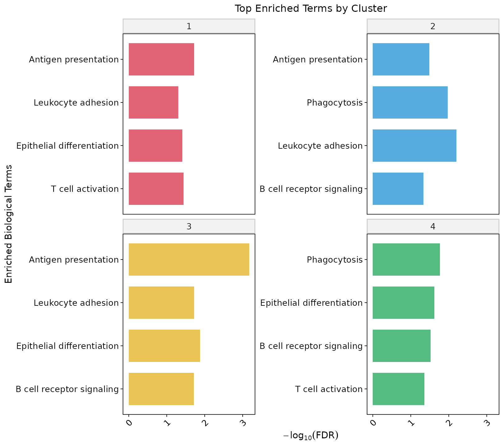
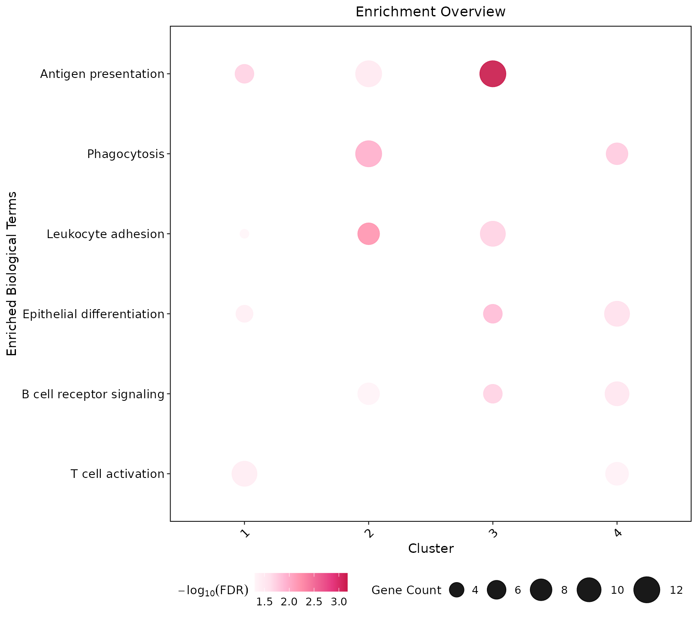

Overview
This module connects neighborhood structure to protein programs: differential testing (spatial-block aware by default), volcano plots with a capped y-axis, and enrichment summaries.
Demo: reg055_A panel expression with neighborhood clusters from the spatial-network tutorial.
Prepare protein table
library(Sphinx)
library(dplyr)
protein_df <- prepare_protein_data(clus, expr_df)Differential expression
diff_res <- perform_differential_expression(
protein_df,
test_level = "spatial_block"
)Volcano plots
-log10(adjusted P) is capped at y_cap (default 50). Points above the cap are drawn as triangles on the truncation line.
plot_volcano_all_clusters(
diff_res,
diff_thresh = 0.15,
p_thresh = 0.05,
y_cap = 50,
ncol = 3,
save_plot = TRUE,
output_dir = "functional_plots",
filename = "VolcanoPlots_AllClusters"
)
Enrichment
enrich <- perform_cluster_enrichment(
diff_res,
species = "human",
pvalueCutoff = 0.05,
mean_diff_cutoff = 0
)
plots <- plot_enrichment_results(
enrich,
top_n = 5,
fdr_cutoff = 0.05,
base_font_size = 12,
save_plot = TRUE,
output_dir = "enrichment_plots"
)
